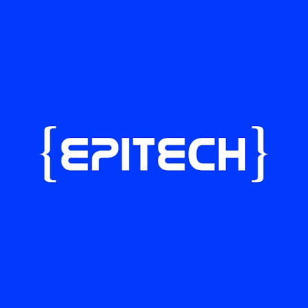
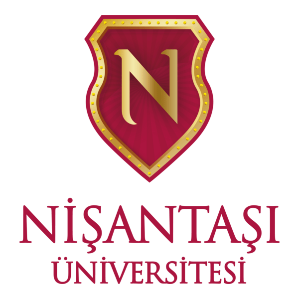
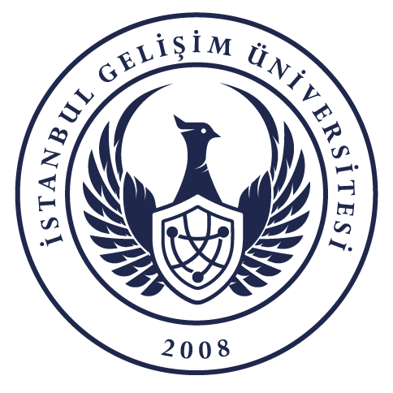
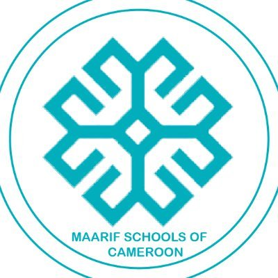
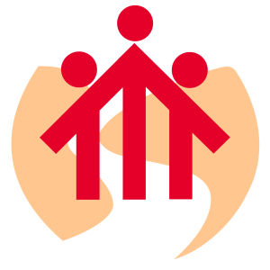
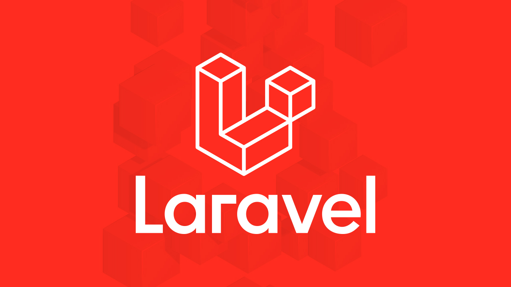
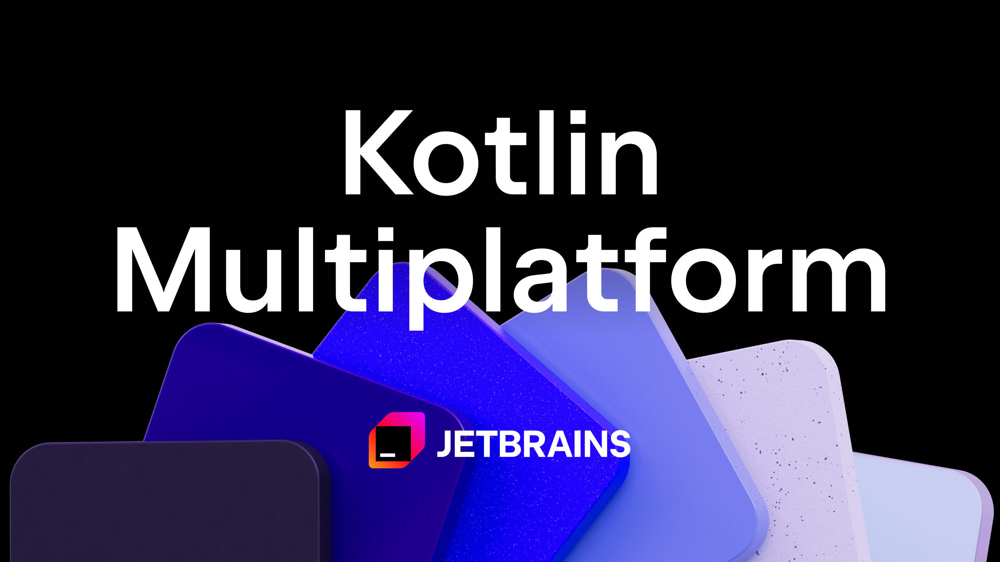

EDUCATION & TRAINING
14/09/2026 - CURRENT Paris, France

Erasmus+ Study Mobility EPITECH Paris
Discover IT programme (ongoing exchange semester), gaining hands-on experience and deepening my foundations in:
- Programming (Python, Java)
- Web development (HTML, CSS, JavaScript)
- DevOps and project management
EQF level 6
19/10/2023 - CURRENT Istanbul, Türkiye

Bachelor’s Degree in Software Engineering Istanbul Nisantasi University
Main Subjects
Skills Developed
- Application development with Java, PHP and Laravel
- System design and requirements analysis
- Database design and management
- Problem-solving and algorithmic thinking
- Software quality and development best practices
- Data analysis and statistical reasoning
- Project management and collaborative teamwork
Level in EQF: EQF level 6
04/02/2023 - 30/06/2023 Istanbul, Türkiye

Turkish Language Preparatory Course Istanbul Gelisim University
Turkish language acquisition and cultural immersion; development of intercultural communication skills
07/09/2020 - 30/07/2022 Ngaoundere, Cameroon

GCE Advanced Level Certificate MAARIF International College
Took Computer Science, Pure Maths with Mechanics, Physics, Biology, Chemistry.
Level in EQF: EQF level 4
WORK EXPERIENCE

Don Bosco Oratorio Istanbul, TürkiyePrimary school Volunteer Teacher
01/06/2025 - 14/08/2026
- Taught mathematics, science and basic computer skills (Word, Excel, PowerPoint) to students aged 6 to 14 and completed teacher training sessions
- Prepared lessons and explained concepts clearly and accessibly, adapting to each age group
- Advised parents and children on improving academic performance
- Acted as English-French interpreter between staff, parents and students
- Led summer activities and organised educational games
SKILLS
DIGITAL SKILLS
HTML/ CSS/ Javascript | Java programing | Microsoft Word | Machine Learning | Python programming | PHP / Laravel Framework | Github Basics | Microsoft ExcelSOFT SKILLS
Problem solving | adapt to change | Communication | Leadership and Organization | Initiative and autonomyProjects
28/01/2026 - 15/06/2026

Laravel E-commerce Website- Built a full-stack e-commerce web application with dual admin templates (SB Admin 2 and AdminLTE), both sharing the same MySQL database.
- Implemented role-based access control, full CRUD for products/categories/orders, shopping cart, and a public contact form with admin management.
28/01/2026 - 15/06/2026
ML Pipeline – California Housing Price Prediction
- As a team, built a complete machine learning program from data preprocessing to model training and evaluation, with a report and presentation, using the built-in California housing dataset with Random Forest and XGBoost models.
- Coordinated all activities as team leader and built the Random Forest model.
01/09/2025 - 12/01/2026

Learn Base Conversion- A Kotlin Multiplatform program to learn how to convert from one base to another, used for the Kotlin annual contest.
- Originally written in Java, then refactored to a Jetpack Compose UI with the help of an AI tool.
CERTIFICATIONS
Istanbul Nisantasi University, 12/08/2025
Certificate of Participation : Artificial Intelligence Module 1, 2 and 3
 Module1: Introducing Artificial Intelligence and using Python
Module1: Introducing Artificial Intelligence and using Python
Module2: Supervised Learning(Classification and Regression)
Module3:
- Unsupervised Learning
- Reinforced Learning
Mode of Learning : Online
Digital Transformation Office of the Presidency of Türkiye| Digital Genc AI Ecosystem, 25/03/2025
 Certificate of Participation: Generative AI Webinar Series - Autoencoder models and Mathematical Foundations of AI
- From Vectors to Algorithms
Certificate of Participation: Generative AI Webinar Series - Autoencoder models and Mathematical Foundations of AI
- From Vectors to Algorithms
Initiative of Turkish Government to increase awareness on AI, using Mathematics to program
Ministry of Transport and Infrastructure and Ministry of Agriculture and Forestry of Türkiye, 30/04/2025
 Green Citizen Awards
Green Citizen Awards
Took a high speed train during the "every ticket a sapling" campaign for a greener country